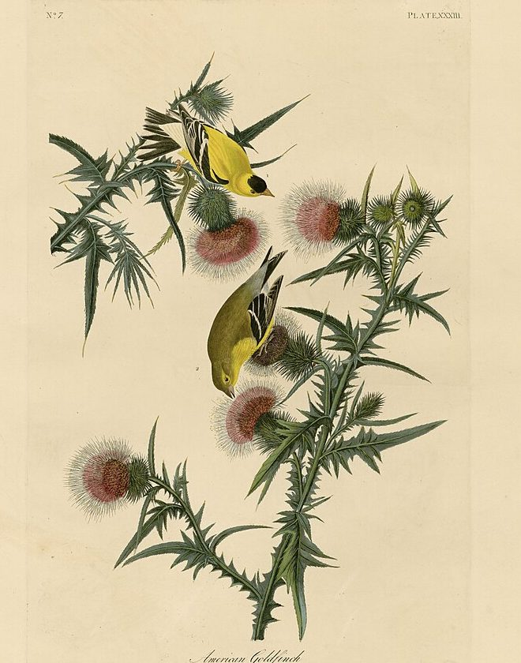
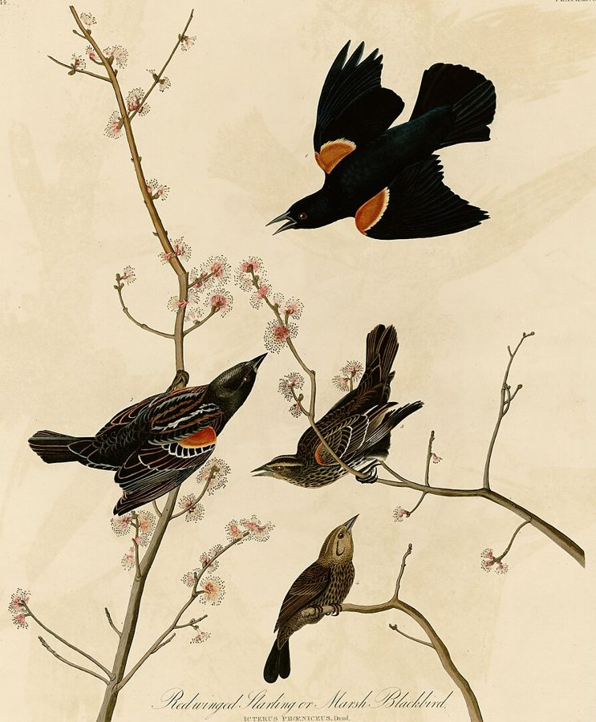
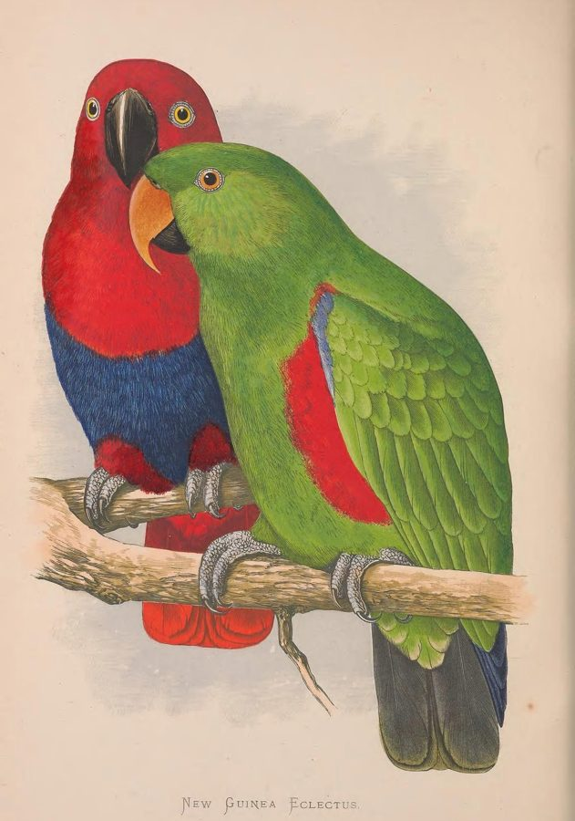
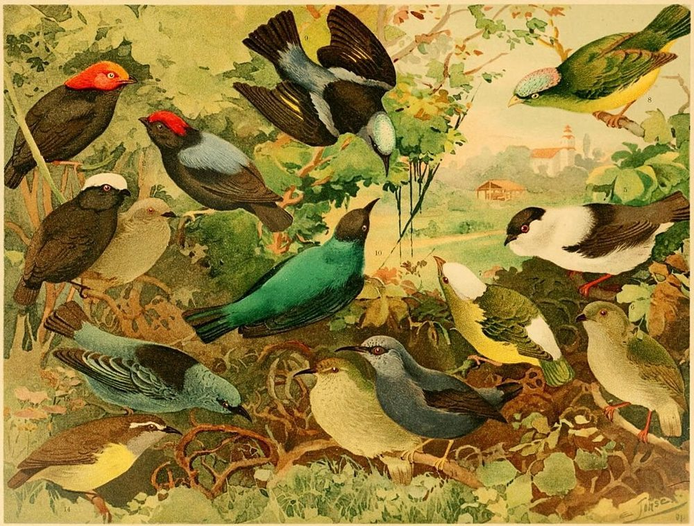
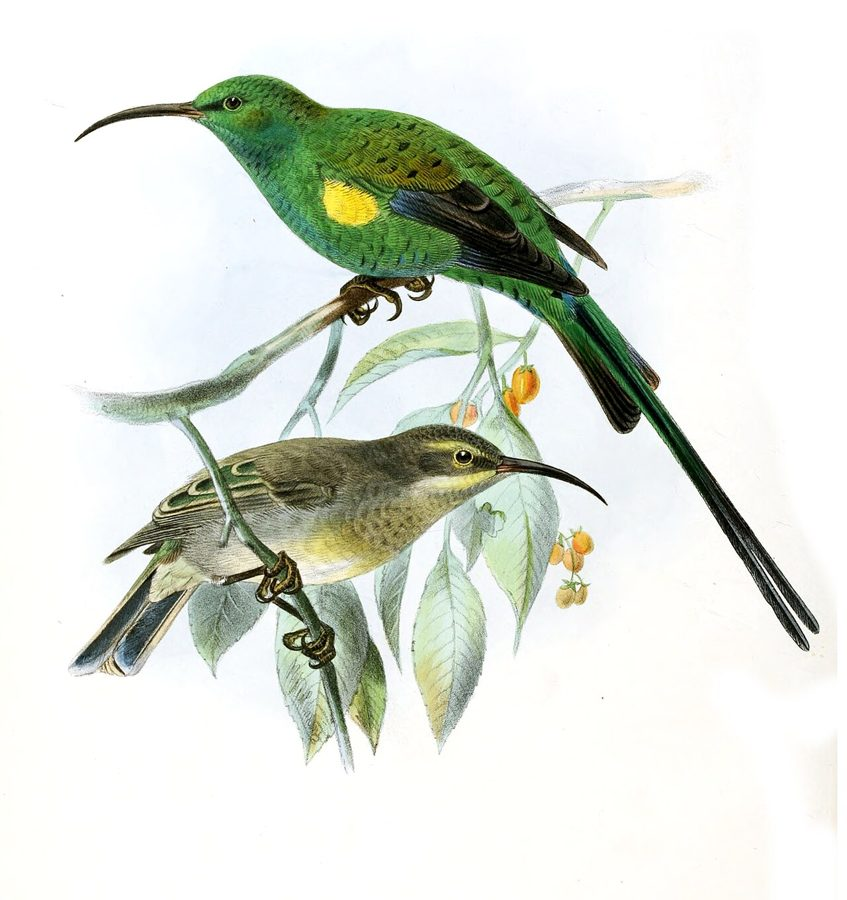
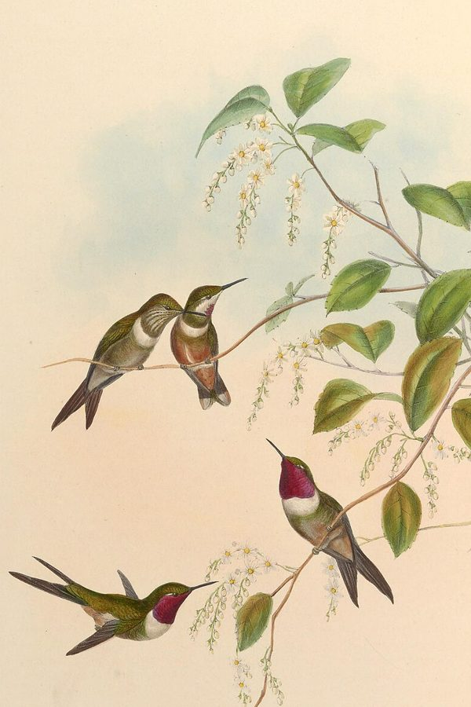

Where a male bird has one color, what does the female wear?
Plumage colors of male and female birds, compared species by species. Each cell shows how often a female bird has one color in the same spot where the male of her species has another. Cells on the diagonal are colors both sexes share; everything off the diagonal is sexual dichromatism.
Species in a cell
Tap a cell to list the species behind it.
Species plumage
Pick a species from the list to see its colors part by part.
Load your own data
The default dataset is every species with a usable Wikipedia plumage description (eBird/Clements v2024 taxonomy), extracted by Claude. Replace it with a JSON file in the same format, or with CSV in long form. Records with only a body part (whole-body sources like Dale et al.) work in whole-body mode.
Three things the plumage of 5,700 bird species says about how females differ
Each figure is the explorer's matrix at fixed settings, chosen to tell one story. Numbered cells match the callouts. Only spots where the sexes differ are counted (diagonal excluded). Use “Open in explorer” to poke at any of them.
Observation 1
Females are usually brown where males are colorful, but not where males are yellow: there they are green
For most male colors, the single most common thing the female wears instead is brown, the familiar drab, melanin-based female. Yellow breaks the rule. Where a male is yellow and the female differs, she is far more often olive-green than brown.
A likely reason is that olive-green is usually the same yellow carotenoid with melanin laid over it. The female keeps the male's pigment and adds a darkening layer rather than switching to a different color. Finches, parrots, weavers and orioles carry most of this pattern.

American goldfinch. Black-and-yellow male above, olive-green female below: same yellow, more melanin.Audubon, Birds of America pl. 33, 1828 · public domain · Wikimedia Commons

Red-winged blackbird. The usual case: black, red-shouldered male; streaky brown females.Audubon, Birds of America pl. 67, 1829 · public domain · Wikimedia Commons
All birds · cells as % of the male's color (columns sum to 100)
Observation 2
Blue and green trade places in two different ways
In hummingbirds and parrots, blue and green swap in both directions, and so do yellow and green. That fits green being a stack of blue feather structure with yellow pigment on top, from which either sex can lose a layer and end up blue or yellow.
In manakins, tanagers and finches, the swap runs one way only. Males are blue or black, females are green, and almost never the reverse. Here the female's olive isn't “blue minus something” but the group's default camouflage plumage.

New Guinea eclectus. Look at the belly: green in the male (front), blue in the female (behind). Her red is a separate swap, green ↔ red, which parrots also do often.Greene, Parrots in Captivity vol. 3 pl. 19, 1887 · public domain · Wikimedia Commons

Amazonian manakins and dacnises. Black and blue males among plain olive-green birds, which in these groups are typically the females.Göldi, Album de aves amazonicas pl. 17, 1900 · public domain · Wikimedia Commons
Hummingbirds + parrots · % of all differing pairs
Manakins + tanagers + finches · % of all differing pairs
Observation 3
In iridescent birds, the male adds metal; the female stays pale
Among hummingbirds and sunbirds, the biggest sex differences are spots where the male is metallic green and the female plain white or grey: gorgets, breasts, bellies. Purple and violet, which come from tuning the same thin-film structure, show up almost only in males. Green females opposite purple males are common, while the reverse barely exists.
Caveat: iridescent hues shift with viewing angle, and text descriptions of them vary, so some green/blue/purple pairs may be wording rather than biology.

Malachite sunbird. Metallic-green male above; plain, streaky olive-grey female below.Keulemans in Shelley, Monograph of the Nectariniidae, 1880 · public domain · Wikimedia Commons

Amethyst woodstar. Males (below) wear violet throats; the paler, rufous-flanked birds above lack them.Gould & Richter, Monograph of the Trochilidae, 1861 · public domain · Wikimedia Commons
Hummingbirds + sunbirds · % of all differing pairs
Data: Wikipedia species descriptions, machine-extracted by Claude into 13 colors × 7 body parts; adult (breeding) plumage; each body part of each species weighs 1. Spot-checked against Delhey & Peters (2017), not hand-verified.


_Red-Sided_or_New_Guinea_Eclectus_(8527258427).jpg){kind=link}
_(7139387173).jpg){kind=link}